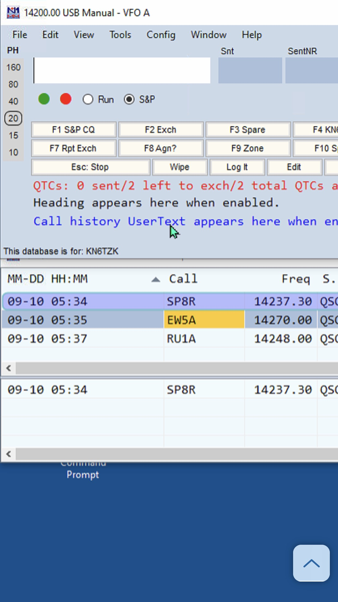

<!-- MHonArc v2.6.19+ -->
<!--X-Subject: Re: [NCDXC Chat] Three DX contacts last night. Thx for encouragement.!!! -->
<!--X-From-R13: &#60;efnqxbjfxvNtznvy.pbz> -->
<!--X-Date: Sat, 10 Sep 2022 12:45:41 &#45;0500 -->
<!--X-Message-Id: A467B8F3&#45;9750&#45;4CBD&#45;A0E5&#45;A1F481BD1A40@hxcore.ol -->
<!--X-Content-Type: multipart/related -->
<!--X-Reference: 64989872&#45;5cc8&#45;3639&#45;de38&#45;3070f49ec178@earthlink.net -->
<!--X-Reference: CAFtCS3nwaqKU+myGY7ErfSgy5jAX_X6hM1rDtHA1EbYORct7Fw@mail.gmail.com -->
<!--X-Reference: CAL4M=4qGe+TcVjya8&#45;CoeAheV0Uh0a0R1r1pr6+qtfst_H391Q@mail.gmail.com -->
<!--X-Derived: pngrWVbXQTIod.png -->
<!--X-Head-End-->
<!DOCTYPE HTML PUBLIC "-//W3C//DTD HTML 4.01 Transitional//EN"
        "http://www.w3.org/TR/html4/loose.dtd">
<html>
<head>
<title>Re: [NCDXC Chat] Three DX contacts last night. Thx for encouragement.!!!</title>
<link rev="made" href="mailto:rsadkowski@gmail.com">
</head>
<body>
<!--X-Body-Begin-->
<!--X-User-Header-->
<!--X-User-Header-End-->
<!--X-TopPNI-->
<hr>
[<a href="msg26686.html">Date Prev</a>][<a href="msg26688.html">Date Next</a>][<a href="msg26686.html">Thread Prev</a>][<a href="msg26688.html">Thread Next</a>][<a href="maillist.html#26687">Date Index</a>][<a href="threads.html#26687">Thread Index</a>]
<!--X-TopPNI-End-->
<!--X-MsgBody-->
<!--X-Subject-Header-Begin-->
<h1>Re: [NCDXC Chat] Three DX contacts last night. Thx for encouragement.!!!</h1>
<hr>
<!--X-Subject-Header-End-->
<!--X-Head-of-Message-->
<ul>
<li><em>To</em>: Andrew Calman &lt;<a href="mailto:acalmanmd%40gmail.com">acalmanmd@gmail.com</a>&gt;, 	Will Shattuck &lt;<a href="mailto:willshattuck%40gmail.com">willshattuck@gmail.com</a>&gt;</li>
<li><em>Subject</em>: Re: [NCDXC Chat] Three DX contacts last night. Thx for encouragement.!!!</li>
<li><em>From</em>: &lt;<a href="mailto:rsadkowski%40gmail.com">rsadkowski@gmail.com</a>&gt;</li>
<li><em>Date</em>: Sat, 10 Sep 2022 10:45:28 -0700</li>
<li><em>Cc</em>: NCDXC Discussion List &lt;<a href="mailto:chat%40ncdxc.org">chat@ncdxc.org</a>&gt;</li>
<li><em>Dkim-signature</em>: v=1; a=rsa-sha256; c=relaxed/relaxed; d=gmail.com; s=20210112;	h=cc:to:references:message-id:in-reply-to:thread-topic:subject:from	:date:mime-version:from:to:cc:subject:date;	bh=IHAYT1TDZhW6YyQBPjuqONmSy4GVTfyLtf/A/Y5PIPE=;	b=HLZlDlHx/qw7GZmYh+vATEKoyJp7exZcjx2YNsCUibVri/wUQhyALj3fKFp7euibZs	3gaIdZ//sS7gKaRHi7dJyunEyq1tuDNjrsa/4e/Qj7e25qZLgS1DnIzWlLeoiu1usabY	WQR/2Rr7vzX7t+x5JCAZaiQkGi07HuVYnCVIofOm+VH1xK2ahzkU0igryfdYGVD7MS+H	zeo7eN1ZlLEQ05KNqUDSuBhOwc/VwQEX74VRgh12wnYktzzCmaQqNHTiDbrdZ93CKqTh	xttDnzC/ORgwmiXYNdKX1aKBiBtel/0NWNV2L21i2G5npVGKh+9+ecVUhsRq/FS6Z54i	wn8g==</li>
<li><em>In-reply-to</em>: &lt;CAL4M=4qGe+TcVjya8-CoeAheV0Uh0a0R1r1pr6+qtfst_H391Q@mail.gmail.com&gt;</li>
<li><em>List-archive</em>: &lt;<a href="http://mail.ncdxc.org/mailman/private/chat_ncdxc.org/">http://mail.ncdxc.org/mailman/private/chat_ncdxc.org/</a>&gt;</li>
<li><em>List-help</em>: &lt;<a href="mailto:chat-request@ncdxc.org?subject=help">mailto:chat-request@ncdxc.org?subject=help</a>&gt;</li>
<li><em>List-id</em>: NCDXC Discussion List &lt;chat.ncdxc.org&gt;</li>
<li><em>List-post</em>: &lt;<a href="mailto:chat@ncdxc.org">mailto:chat@ncdxc.org</a>&gt;</li>
<li><em>List-subscribe</em>: &lt;<a href="http://mail.ncdxc.org/mailman/listinfo/chat_ncdxc.org">http://mail.ncdxc.org/mailman/listinfo/chat_ncdxc.org</a>&gt;,	&lt;<a href="mailto:chat-request@ncdxc.org?subject=subscribe">mailto:chat-request@ncdxc.org?subject=subscribe</a>&gt;</li>
<li><em>List-unsubscribe</em>: &lt;<a href="http://mail.ncdxc.org/mailman/options/chat_ncdxc.org">http://mail.ncdxc.org/mailman/options/chat_ncdxc.org</a>&gt;,	&lt;<a href="mailto:chat-request@ncdxc.org?subject=unsubscribe">mailto:chat-request@ncdxc.org?subject=unsubscribe</a>&gt;</li>
<li><em>References</em>: &lt;<a href="msg26683.html">64989872-5cc8-3639-de38-3070f49ec178@earthlink.net</a>&gt;	&lt;<a href="msg26682.html">CAFtCS3nwaqKU+myGY7ErfSgy5jAX_X6hM1rDtHA1EbYORct7Fw@mail.gmail.com</a>&gt;,	&lt;CAL4M=4qGe+TcVjya8-CoeAheV0Uh0a0R1r1pr6+qtfst_H391Q@mail.gmail.com&gt;</li>
<li><em>Thread-topic</em>: RE: [NCDXC Chat] Three DX contacts last night. Thx for	encouragement.!!!</li>
</ul>
<!--X-Head-of-Message-End-->
<!--X-Head-Body-Sep-Begin-->
<hr>
<!--X-Head-Body-Sep-End-->
<!--X-Body-of-Message-->
<table width="100%"><tr><td style="a:link { color: blue } a:visited { color: #954F72 } "><div class=WordSection1><p class=MsoNormal>You&#x2019;re absolutely right. I quit a million times so far&#x2026; <span style='font-family:"Segoe UI Emoji",sans-serif'>&#128522;</span></p><p class=MsoNormal><o:p>&nbsp;</o:p></p><p class=MsoNormal><o:p>&nbsp;</o:p></p><p class=MsoNormal><o:p>&nbsp;</o:p></p><div style='mso-element:para-border-div;border:none;border-top:solid #E1E1E1 1.0pt;padding:3.0pt 0in 0in 0in'><p class=MsoNormal style='border:none;padding:0in'><b>From: </b><a rel="nofollow" href="mailto:chat@ncdxc.org">Andrew Calman via Chat</a><br><b>Sent: </b>Saturday, September 10, 2022 10:36 AM<br><b>To: </b><a rel="nofollow" href="mailto:willshattuck@gmail.com">Will Shattuck</a><br><b>Cc: </b><a rel="nofollow" href="mailto:chat@ncdxc.org">NCDXC Discussion List</a><br><b>Subject: </b>Re: [NCDXC Chat] Three DX contacts last night. Thx for encouragement.!!!</p></div><p class=MsoNormal><o:p>&nbsp;</o:p></p><div><div><p class=MsoNormal><span style='font-size:12.0pt'>DX is NOT an addiction. I can quit anytime I like. hihi<o:p></o:p></span></p></div><div><p class=MsoNormal><span style='font-size:12.0pt'><o:p>&nbsp;</o:p></span></p></div><div><p class=MsoNormal><span style='font-size:12.0pt'>73,<o:p></o:p></span></p></div><div><p class=MsoNormal><span style='font-size:12.0pt'>Andy K6ZP<o:p></o:p></span></p></div><div><p class=MsoNormal><span style='font-size:12.0pt'>Montara, CA<o:p></o:p></span></p></div></div><p class=MsoNormal><o:p>&nbsp;</o:p></p><div><div><p class=MsoNormal>On Sat, Sep 10, 2022 at 9:45 AM Will Shattuck via Chat &lt;<a rel="nofollow" href="mailto:chat@ncdxc.org">chat@ncdxc.org</a>&gt; wrote:</p></div><blockquote style='border:none;border-left:solid #CCCCCC 1.0pt;padding:0in 0in 0in 6.0pt;margin-left:4.8pt;margin-right:0in'><div><p class=MsoNormal>Yes getting out of bed when recovering from being sick may be level 2 of that DX Bug too. Lol</p></div><div><p class=MsoNormal><o:p>&nbsp;</o:p></p></div><div><p class=MsoNormal>Will</p></div><div><p class=MsoNormal><o:p>&nbsp;</o:p></p></div><div><p class=MsoNormal>On Sat, Sep 10, 2022 at 9:40 AM Paul Booth &lt;<a rel="nofollow" href="mailto:wa6ibu@earthlink.net">wa6ibu@earthlink.net</a>&gt; wrote:<o:p></o:p></p></div><div><div><blockquote style='border:none;border-left:solid #CCCCCC 1.0pt;padding:0in 0in 0in 6.0pt;margin-left:4.8pt;margin-right:0in'><div><p style='margin:0.1rem 0px'><span style='font-size:12.0pt;font-family:"Arial",sans-serif;color:black'>Will, Congrats!&nbsp; You have now been certifiably diagnosed with the DX bug.&nbsp; It's not curable once it sets in.&nbsp; Getting out of bed and losing sleep is the first sign.&nbsp; Hi Hi.<o:p></o:p></span></p><p style='margin:0.1rem 0px'><span style='font-size:12.0pt;font-family:"Arial",sans-serif;color:black'>&nbsp;<o:p></o:p></span></p><p style='margin:0.1rem 0px'><span style='font-size:12.0pt;font-family:"Arial",sans-serif;color:black'>73, Paul, W6IBU<o:p></o:p></span></p></div><div style='border:none;border-left:solid #AAAAAA 1.0pt;padding:0in 0in 0in 11.0pt;box-sizing:border-box'><p>-----Original Message-----<br>From: Will Shattuck &lt;<a rel="nofollow" href="mailto:willshattuck@gmail.com">willshattuck@gmail.com</a>&gt;<br>Sent: Sep 10, 2022 9:24 AM<br>To: NCDXC Discussion List &lt;<a rel="nofollow" href="mailto:chat@ncdxc.org">chat@ncdxc.org</a>&gt;<br>Subject: [NCDXC Chat] Three DX contacts last night. Thx for encouragement.!!!<o:p></o:p></p><p style='margin:0.1rem 0px'>&nbsp;</p><p class=MsoNormal>Thanks for all the encouragement after my discouraging discord post. It took me a couple of days to get over it.&nbsp; </p><div><p class=MsoNormal>&nbsp;</p></div><div><p class=MsoNormal>Last night I was listening to CW on a Kiwisdr site in San Francisco practicing ICR. I moved up to the SSB portion and heard Poland and what turned out to be Belarus and Russia. So I got out of bed and went to see if I could hear them on my radio with the G5RV JR antenna. Much to my surprise I could!</p></div><div><p class=MsoNormal>&nbsp;</p></div><div><p class=MsoNormal>I made three DX contacts that I had not made yet. That was Great Fun!!!</p></div><div><p class=MsoNormal>&nbsp;</p></div><div><p class=MsoNormal>Thanks everyone for the encouragement. It made a huge difference. Good Elmer&#x2019;ing. <span style='font-family:"Segoe UI Emoji",sans-serif'>&#128522;</span>&nbsp;</p></div><div><p class=MsoNormal>&nbsp;</p></div><div><p class=MsoNormal>TU 73</p></div><div><p class=MsoNormal>Will</p></div><div><p class=MsoNormal>KN6TZK&nbsp;</p></div><div><p class=MsoNormal>&nbsp;</p></div><div><p class=MsoNormal>&nbsp;</p></div><div><div><p class=MsoNormal></p></div></div><p class=MsoNormal>-- </p><div><p class=MsoNormal>Will Shattuck<br>661-203-0136<o:p></o:p></p></div></div><p style='margin:0.1rem 0px'>&nbsp;</p></blockquote></div></div><p class=MsoNormal>-- </p><div><p class=MsoNormal>Will Shattuck<br>661-203-0136</p></div></blockquote></div><p class=MsoNormal style='margin-left:4.8pt'>_______________________________________________<br>Chat mailing list<br><a rel="nofollow" href="mailto:Chat@ncdxc.org">Chat@ncdxc.org</a><br><a rel="nofollow" href="http://mail.ncdxc.org/mailman/listinfo/chat_ncdxc.org">http://mail.ncdxc.org/mailman/listinfo/chat_ncdxc.org</a></p><p class=MsoNormal><o:p>&nbsp;</o:p></p></div></td></tr></table>
<!--X-Body-of-Message-End-->
<!--X-MsgBody-End-->
<!--X-Follow-Ups-->
<hr>
<!--X-Follow-Ups-End-->
<!--X-References-->
<ul><li><strong>References</strong>:
<ul>
<li><strong><a name="26683" href="msg26683.html">Re: [NCDXC Chat] Three DX contacts last night. Thx for encouragement.!!!</a></strong>
<ul><li><em>From:</em> Paul Booth &lt;wa6ibu@earthlink.net&gt;</li></ul></li>
<li><strong><a name="26682" href="msg26682.html">Re: [NCDXC Chat] Three DX contacts last night. Thx for encouragement.!!!</a></strong>
<ul><li><em>From:</em> Will Shattuck &lt;willshattuck@gmail.com&gt;</li></ul></li>
<li><strong><a name="26686" href="msg26686.html">Re: [NCDXC Chat] Three DX contacts last night. Thx for encouragement.!!!</a></strong>
<ul><li><em>From:</em> Andrew Calman &lt;acalmanmd@gmail.com&gt;</li></ul></li>
</ul></li></ul>
<!--X-References-End-->
<!--X-BotPNI-->
<ul>
<li>Prev by Date:
<strong><a href="msg26686.html">Re: [NCDXC Chat] Three DX contacts last night. Thx for encouragement.!!!</a></strong>
</li>
<li>Next by Date:
<strong><a href="msg26688.html">[NCDXC Chat] ZL7/K5WE</a></strong>
</li>
<li>Previous by thread:
<strong><a href="msg26686.html">Re: [NCDXC Chat] Three DX contacts last night. Thx for encouragement.!!!</a></strong>
</li>
<li>Next by thread:
<strong><a href="msg26688.html">[NCDXC Chat] ZL7/K5WE</a></strong>
</li>
<li>Index(es):
<ul>
<li><a href="maillist.html#26687"><strong>Date</strong></a></li>
<li><a href="threads.html#26687"><strong>Thread</strong></a></li>
</ul>
</li>
</ul>

<!--X-BotPNI-End-->
<!--X-User-Footer-->
<!--X-User-Footer-End-->
</body>
</html>
